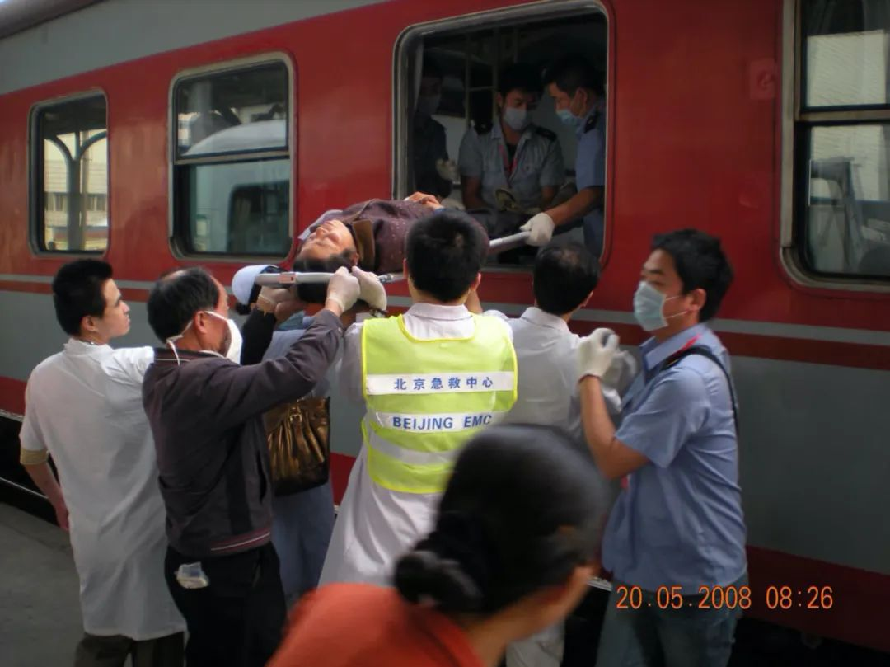
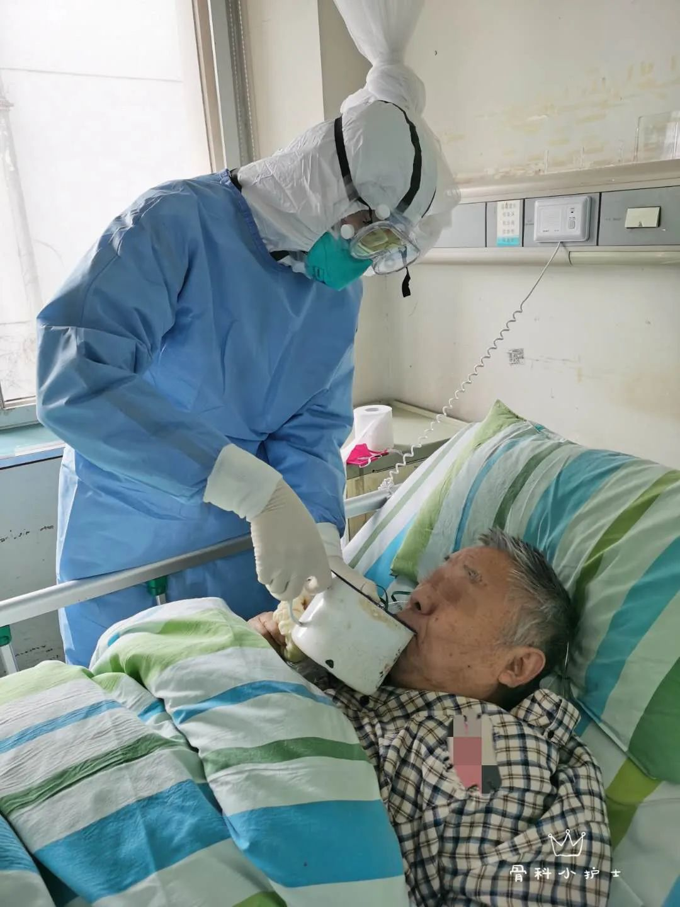

金银潭“留守”医生： 尽可能把危重病人死亡率降下来
原文链接 备份链接 *****两个月下来，治疗上相对成熟了，病人也不多了，所以每个病人都要给他精细化的管理，做一对一的个体化的治疗方案。***** 上海医疗队的医生们。受访者供图 文 | 新京报记者 王双兴 编辑 | 胡杰 校对 | 杨 …

亲历过SARS和汶川地震的医疗救治，这一次，梁腾霄又和同事到武汉支援了45天，前后收治96位病人。
梁腾霄是一位中医，团队治疗的特点是中西结合。他认为中西医思路有区别， 西医的思路是直接就把病毒枪毙，中医的办法是把这个邪气赶走。
他认为，轻症患者状态比较好的话，可以只用中药。但是重症病人，肯定是要中西医结合的，不排斥抗病毒药物。
这个病毒是未知的，不要自己把中医拔得太高，毕竟也没有特别大的把握。

3月11日中午，来到武汉的第45天，梁腾霄和同事们终于腾空了湖北省中西医结合医院住院部6层的所有床位。按照指挥部的统一安排，一部分病人被转运到金银潭、火神山等几家医院集中治疗。归期，终于可期。
转运病人的通知在3月9日突然下达，这天梁腾霄本要去6层查房。通知来得突然，工作被猛地按下了暂停键。转运先是从ICU开始，十几个上了呼吸机的病人转走了。接着，是普通重症病人。两天内，整个湖北省中西医结合医院的重症病人全部被转走，病房空了。
此后，武汉市的4000多个危重症病人都陆续被集中收治。更多医院已经提早结束战役，回到正常的轨道，重新开诊。像梁腾霄这样从全国各地赶来援助的4万多医护，归期已近。
梁腾霄是北京中医药大学东直门医院的一位副主任医师。他经历过多次重大疫情灾害的支援：2003年的SARS、2008年的汶川地震，再到这次新冠疫情。
1月27日，他和团队从北京出发，带着全院仅有的100多个医用N95口罩，直奔湖北省中西医结合医院。截至3月12日病人转运完毕，整个团队已经连续工作了45天。这是大多数援助医护的常态。从进武汉那一刻开始，就意味着，不能停下，直到疫情结束。这样的工作强度，超出了以往经验。汶川地震那会儿，医生有可以喘息的时机，一般工作15天，就会被强制休息。
在梁腾霄看来，中医和西医面对病毒的理念有很大的区别。他的治疗实践特点是中西结合，没有排斥西医，不抗拒使用抗病毒药物。
对于新冠病毒，他有一个逐步认识的过程。即便到了现在，他也认为还没有认识到全貌。离开武汉后，他希望继续对病人随访，摸索出更多治疗经验，未来可以更好地面对这个未知的病毒。
以下内容根据梁腾霄的口述整理：

△梁腾霄在为患者诊疗。本文图片由受访者提供。
亲历SARS、汶川地震，又来了武汉
1月27日，我们从北京来到武汉。我们医院来了6个医生，13个护士，1个领队。
我们20个人，和北京中医药大学东方医院的20个医护组成北京中医药大学医疗队，包了湖北省中西医结合医院住院部第六层楼的整个病区，轮流干活。东方医院24小时，东直门医院24小时。到3月11日，我们已经来了45天，前后一共收治了96个病人。
最初，我们收进来的病人都是病情很严重的，接近危重症。后来武汉重症病人逐渐减少。现在我们病房里，有一些是从方舱医院转过来的，病情加重的患者。
我亲历了SARS，那年我还是个二十六七岁的小伙子。印象最深的是，比我大10岁左右的一个同事去世了。2003年3月17日，他接诊了我们医院第一例SARS病人。当时北京还没有重视这个传染病，防护意识不强，给病人气管插管也只是戴外科口罩，接着他就被感染了，4月19日去世。那是我第一次感受到死亡离自己这么近。

△梁腾霄在汶川地震救助现场。
2008年，我去了汶川地震现场，帮着转运病人。北京市组织了一批医疗队。除了120，每家医院也要出一辆救护车，一个医生，一个护士和两个司机。救护车是用火车，从北京运到现场。我们坐另一班火车抵达，一共运过去了70多台救护车。
到了现场，每天都会有人从前线给我指派任务。我们坐救护车去找现场被救出来的伤员，观察病情，看哪些可以坐飞机，哪些可以坐火车。一辆救护车一般能塞下两到三个伤员。那个时候，成都以及周边地市医院都是伤员，已经满负荷。我们需要连夜把病人送到机场或者火车站，让伤员到其他省市治疗。最远的一次，我们把伤员从现场送到重庆的一家医院，再连夜赶回成都。这样的状况持续了十几天。

△梁腾霄在汶川地震救助现场。
这是我第三次来到前线。来之前，院长打电话征求我意见，觉得经历过这些（SARS、汶川地震），不强求我去。但我还是来了，我想同事们会需要我的经验。出发前，我隐隐有一点担忧，觉得会不会有可能回不去了。
到了这里，我的经验确实还是起到了一些作用。比如，如何最大程度降低感染风险。我跟同事们说：你进病房之前要想，为什么要进这个病房。如果和病人讲几句话就能够把这件事儿办完，那就不要过多逗留。如果没有这样的意识的话，很容易沟通效率低。反复进病房，就会增加感染的机会。
因为只要有同事感染，队伍一减员，就会动摇军心，整个队伍的工作就会有很大的困难。如果保护不好自己，也就难以去照料好病人。幸运的是，我们20人的状况目前都还不错。
对新冠病毒，我们有一个认识的过程
湖北中西医结合医院是家综合性医院，本身没有传染病房。疫情发生后，医院对病房进行紧急改造，按照“三区双通道”的结构改造住院处。三区是指清洁区、半污染区和污染区，双通道是指医护人员通道和病人通道。我们抵达的时候改造工作整体上已经完成，我们做了一些细节上的调整，使病房更符合收治传染病的要求。
一开始，北京医疗队只接管了住院处六楼的一个病区，一共14个房间，37张床，其中两张床没有氧气装置。这个病区最开始收疑似病例，每个人都要单间管理，所以只收了14个病人。
没过几天，这个病区改为确诊病房，就可以按病床收治了。到2月8日，35张床就住满了。北京医疗队一共40个人，25名护士，15名医生。这样的人手配置是比较紧张的。一般合理的配置重症病房应该是一张床配2.5个护士。35张床，光护士就需要80多人，这在疫情期间是不可能的。尤其是后来还增加了一部分去ICU查房的工作，给上呼吸机的病人做检查，工作量就更大了。
在治疗上，我们的任务主要是想办法阻止病人从重症转成危重症，最终减少死亡率。治疗外，对病人生活上的照料也花了我们很多精力。比如，病人没有力气端水，倒水，上厕所，吃饭，这些都需要我们来帮忙做，就还担任了护工和卫生员的角色。
对新冠病毒，我们有一个认识的过程。一开始，病人到我们手上时，大都已经很重了。对于这个病到底会怎么样变化，我们不是特别了解，不是特别有把握。
前期治疗的时候，病情难以控制。我们接诊的第一位病人是一位90岁的老爷爷，从高干病房转过来的，看上去物质条件比较好，但转过来第三天就去世了。因为他年岁比较大，本身就有肺癌，还有其它基础病。
还有时候，一个病人很突然就死了，这也是新冠病毒的一个特点。就是你可能没有想象他会病得那么严重，但是病情发展很快。早上医生去查房的时候还好好的，转身查房结束，就停止了呼吸。后来发现，是因为没有及时观察到他的呼吸已经衰竭了。
那时我们接诊的都是发病时间比较久的重症病人。从生病到住院大概平均都已过去12天，我们看不到患者早期的疾病状况，没法了解整个疾病自然病程的全过程。没有看到全貌的话，治疗的方案，准确程度多多少少会受一些影响。
现在有一部分病人是从方舱医院过来，基本发病时间是在7天以内，时机很好，我们可以早一点进行干预。从病情相对来说比较轻的患者身上，我们慢慢看到了这个疾病发展的全过程，对这个疾病有了比较直观的认识。当然，还是没看到最早期的。
尸检的结果对我们认识这个疾病有很大帮助。一开始我们没有意识到，病人肺部会有很多粘稠的痰。这个病有一个比较讨厌的地方，病人自己咳出来的痰并不多，基本都是干咳，无痰。
所以前期治疗，我们主要以防止肺部纤维化为主。抗纤维化实际上是不容易的，难度也大，但是化痰相对容易。如果主要以化痰为主，反而比较好治疗，也能更快起效。所以，第一例尸检结果一出来，我就跟团队讨论，调整了治疗策略。

轻症可以只用中药，重症不会抗拒抗病毒药物
我们治疗的特点是中西结合。轻症患者状态比较好的话，可以只用中药。但是重症病人，肯定是要中西医结合的，不会抗拒使用抗生素、抗病毒药物。这个病毒是未知的，不要自己把中医拔得太高，毕竟也没有特别大的把握，干吗不用抗病毒药物呢？
印象很深的是，有一个病人呼吸已经很困难了，已经符合转入ICU的指标，符合插管治疗的要求。但是他年岁大了，79岁，我们怕他一插管就摘不下来了，没有让他去ICU。
这样的状况，是一定要中西医结合治疗的。老大爷吃不了东西，就得静脉给他营养；继发了一些细菌感染，要给他用抗生素；不想喝水，我们要输液补充水分，补充人体需要的这些元素。糖、脂肪、蛋白、氨基酸这些东西都要给进去。这个就是西医的治疗，稳定患者体内的环境。
他进来前，在其他地方治疗的时候用了阿比多尔、莲花清瘟胶囊等药，但病情依然没有好转，还有40多年的高血压和30多年的冠心病病史。我检查了他的舌苔，红偏紫，右侧苔黄腻，左侧苔少，中部脱落。我从中医角度判断是，疫病疫毒闭肺、热盛津亏症。而我的这个辨证分型，是第五版指南里中医各个分期都没有提及到的，这就是中医的个体化治疗。所以我给他用了以益气清热、养阴透邪的中药药方。后来我又和几个专家会诊，调整了方子。
我们的治疗不能局限于指南。指南是给学生看的，给没用过中医治疗的医生看的。就像你用手机似的，你第一次用手机的时候，你要看说明书，但买第二部手机的话，谁都不看说明书，就是自己开发了，对不对？
这个病人是2月5日进来的，到2月19日的时候，不吸氧的状态下血氧饱和度已经达到97%，符合所有出院标准，他就顺利出院了。
从中医的角度，我们讲扶正祛邪。比如这个病毒，它是损伤人体的，中医叫邪气。而靠自己的能力维持机体的这部分，就叫正气。邪气入侵，正气就虚了。
祛邪有好多办法，西医的思路，就是直接就把细菌、病毒枪毙。最典型的就是抗生素，抗病毒的药。中医的办法是把这个邪气赶走。
比如说夏天屋子里进来一只苍蝇，老在这飞，挺讨厌的。你把窗都给它关上，然后打这只苍蝇，这就是西医的办法。它老在那飞，你屋子又大，怎么办呢？你老逮不着它。但是也有个办法，开开窗户，然后拿个扇子扇一扇。这个苍蝇也不死心眼，它可能飞出去。飞出去你再把门关上，你这就好了。这是中医的思路，就是给邪气出路。
当然中医祛邪的方法有很多，给邪以出路只是其中的一种。以后还要好好研究，好好挖掘中医这个宝库。
对于重症患者来说，治疗时机非常重要。在适合的时机上，用一个适当的方法，可能不一定要多大的力，病人可能就恢复了。这个时机要是错过去了，你可能不管用多大的力气也挽救不回来了。
这个时机不是医生定的。从重转危的过程，中医有一个说法叫做截断扭转。截断病势，然后扭转回去。掌握这个时机非常关键。
新冠病毒有一个特点，它可能会对血液系统有侵犯。有个指标是D-二聚体，我观察了这个指标，发现新冠病毒在血管内形成微血栓的可能性比别的病毒性肺炎要高。
我们现在所有的精力都在急性期的治疗上。后期长久来看，到底这个病会怎么发展，谁也不清楚。但是，至少我观察到，在出院重症患者身上，还有一个指标偏低，那就是淋巴细胞计数。这说明免疫系统受损了，短期内还难以恢复。这个病毒对免疫系统到底是不是一个持续的损伤，还有待观察。
我们计划病人出院以后，要按一个月、三个月、半年这几个阶段，帮他们安排CT检查、随访。我们将来也可能会定期过来随访。这对医疗队来说是额外的工作，但我们还是觉得要观察。因为现在患病群体也不是个小群体，八万多确诊病例，将来如果能摸索出一些后续治疗经验的话，就更好了。

偶尔治愈，总是安慰
除了治疗，我们还要去安慰和鼓励病人。
现在每天早上起来第一件事情就是先测体温，先自我感觉一下，好像没有发烧，那今天挺高兴。
我们隔一天就要进一次病房，每次进病房都是一次新的被感染的机会。今天进病房，就意味着未来的14天都不安全。就怕哪一天一发烧，可能就是发病了。大家都有这样的压力。
有时候碰到有病人病情加重的情况，我能够感受到整个医疗队，包括医生，包括护士，都很不开心。病人前一天还好好的，来的时候没有那么重，但是急剧转化，后一天可能要带呼吸机，要带无创的机器吸氧了。这时候会很沮丧，有点有劲使不出来的这种感觉，很无力。
病人会焦虑，他会不断地问你，我的病情怎么样？我的化验单结果怎么样？我什么时候能出院？我这个病得治多长时间？每天都会这样反复问。
而大多数时候，病人即使没有病情加重，也会有情绪崩溃的时候。我们的很多时间，都在陪伴和安慰病人，听她诉说。
有一个病人，六十多岁的一个老太太，有一天晚上暴哭。她老伴去世了。住院的时候，她住六层，老伴住三层，谁也见不到谁。
她刚来的时候就跟我们讲，能不能调整在一个屋子里，这样互相容易照顾。我们就说可以，就给她联系。一开始三楼医护人员说，老先生没有确诊，是疑似病例，她这边是确诊的，所以不能转上来。我们也就跟她这么讲。
实际上医护人员没有跟我们说实话。后来再过段时间，三楼的医护人员说老先生已经去世了。过了一周，老太太家里人给她打电话，告诉了她这个事情。她有一段时间不太吃东西。有一天晚上，她情绪一下就宣泄了，大哭。我们的护士就陪伴在旁边，和她聊天，疏解情绪，慢慢就过去了。现在她也已经出院了。
梁腾霄|口述
吴靖|撰稿
王吉陆|责编
致读者：
“八点健闻”公众号将于4月11日恢复更新。在此之前，我们在“八点健闻Plus”发表报道。敬请关注。

我们尊重原创版权，未经授权请勿转载。
郑琪|授权转载
微信号：1281949389
商务合作
上海：leslee 13916263824
北京：Jessie 13911125922
线索爆料、意见反馈，加入核心读者社群
请扫码联系健闻君

让朋友们看到你也在看
↓↓↓
原文链接 备份链接 *****两个月下来，治疗上相对成熟了，病人也不多了，所以每个病人都要给他精细化的管理，做一对一的个体化的治疗方案。***** 上海医疗队的医生们。受访者供图 文 | 新京报记者 王双兴 编辑 | 胡杰 校对 | 杨 …
原文链接 备份链接 新冠病毒肺炎（COVID-19）不分国界。想要帮助全人类战胜这种疾病，美国和中国以及世界其它各国专家之间的密切合作必不可少。 哪类患者会转为危重症病人？哪些病人会幸存？区分他们的临床特征是什么？这些是美国各州医生最 …
原文链接 备份链接 *****除了中医，江夏方舱也离不开一些西医的检测和诊疗手段，“中西医的优势是互补的，在疫情中是可以结合运用的。”***** 刘清泉（左二）在武汉协和医院西院区为患者把脉诊疗。图/北京中医医院微信公众号 文 | 新京报 …
原文链接 备份链接 记者/郭慧敏 编辑/石爱华 宋建华 杨鹏在病房里查房 随着疫情防控形势转好，完成救助任务的各地医疗队开始分批离鄂。3月17日，41支国家医疗队3675人踏上返程。 杨鹏所属的中日友好医院援鄂重症医疗队，是国家卫健委所属 …
原文链接 备份链接 我是记者郭静。 如果说武汉是这场疫情的中心，那么中心的中心，就是金银潭医院。作为武汉市传染病专科医院，这里是最早打响这场全民抗“疫”之战的地方。在与死神较量的正面搏击中，身为一院之长的张定宇，他拖着身患“渐冻症”的病 …